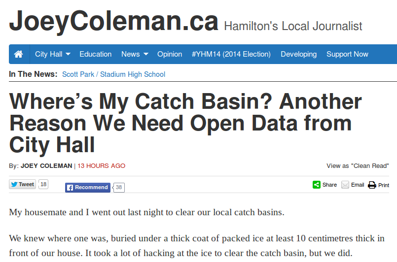

Open Data *is* Shared Prosperity
OpenDataWindsorEssex & Hackforge
Windsor Star, News Cafe, August 21, 2014
What do we mean by Open Data?
“Open data is data that can be freely used, reused and redistributed by anyone – subject only, at most, to the requirement to attribute and sharealike.” Open Knowledge Foundation okfn.org
What do we mean by Open?
- It can be freely distributed and re-distributed
- It allows for universal participation
- It is in a format that is free of technological restriction
What do we mean by Data?

Why Open Data?
There are a variety of different motivations behind the Open Data movement.
Here are some reasons for Open Data but please be aware that there are more than those.
1. Greater Public Awareness

2. Reduces redundancy, shares expertise, & encourages collaboration
When an organization shares its data, it helps its community by reducing the collective effort needed that would otherwise be spent duplicating their work
3. Allows students to research where they live
"Community research is a mile wide and an inch deep while academic research is an inch wide and mile deep".
4. Increases Civic Engagment
Open data efforts can help bring citizen participation back into citizenship
<5. Reasons We Can't Even Predict
Thank you to the City of Windsor for their Open Data Catalogue
Want to learn more?
visit us online :: http://hackf.org/opendatawindsoressex
follow us :: http://twitter.com/opendatawindsor
contact us :: info@hackf.org
This presentation is powered by reveal.js